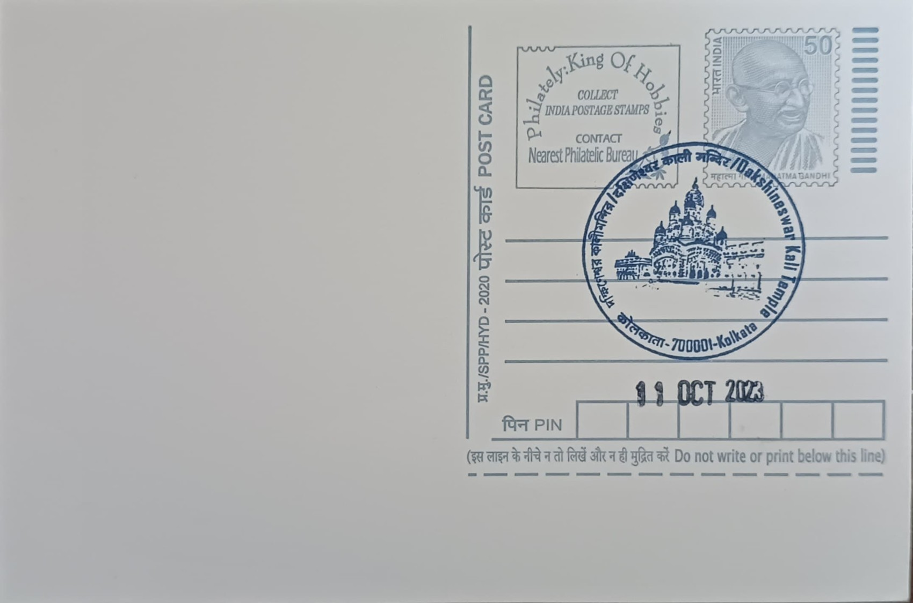

Dakshineswar Kali Temple
দক্ষিণেশ্বর কালী মন্দির


The Dakshineswar Kali Temple traces its origin to a dream attributed to Rani Rashmoni, the Mahishya-caste zamindar widow who controlled the vast estate of her late husband Babu Rajchandra Das. In 1847, as she prepared to travel to Varanasi to worship Goddess Kali, she reportedly received a vision in which the goddess instructed her instead to install an image on the banks of the Hooghly near Calcutta and arrange for its continuous worship. Acting on this instruction rather than undertaking the pilgrimage, Rashmoni selected a riverside plot at Dakshineswar, on ground said to resemble a tortoise's back, a shape regarded in Tantric tradition as auspicious for the worship of Shakti.
As a place of worship, Dakshineswar belongs to the Shakta tradition of Hinduism, centred on the presiding deity Bhavatarini, a form of Kali depicted standing on the prostrate form of Shiva atop a thousand-petalled silver lotus. Its significance extends well beyond its architecture: the temple is one of the most visited Kali shrines in eastern India and holds particular importance within modern Hindu reform movements because of its direct association with Ramakrishna Paramahamsa, who arrived from the village of Kamarpukur in 1855 to serve as priest and whose teachings there, communicated to disciples including Swami Vivekananda, shaped the Ramakrishna Mission and a broader revival of Vedantic thought across India and abroad.
Construction of the temple complex spanned roughly eight years, from 1847 to 1855, and is said to have cost about nine lakh rupees, a very large sum for the period, funded entirely by Rashmoni. Built in the characteristic nine-spired navaratna style of Bengal, the main shrine stands on a square plan of about 46 feet with the structure rising over 100 feet, its three storeys culminating in nine spires across the upper two levels, reached by a broad flight of steps leading to the sanctum. The image of Bhavatarini was consecrated on the occasion of Snana Yatra, 31 May 1855, in a ceremony attended by an estimated crowd of pilgrims and brahmins invited from across Bengal.
A distinguishing feature of the complex is its arrangement of twelve identical subsidiary Shiva temples, built in the aat-chala Bengali style and set in two rows of six flanking the bathing ghat on the river, facing east toward the Hooghly. To the northeast of the main shrine stands the separate Radha Kanta temple, housing a silver throne bearing a 21.5-inch image of Krishna alongside a 16-inch image of Radha, reflecting the complex's accommodation of Vaishnava devotion within what is otherwise a Shakta temple precinct. It was within a small room in this complex, the nahabat and the Kali temple's inner sanctum, that Ramakrishna is said to have undergone the intense spiritual practices and visions for which he later became renowned.
Today the temple is administered by a trust established under Rani Rashmoni's family line, and it functions as an active place of daily worship rather than purely a historic monument, drawing large crowds especially during Kali Puja and other Shakta festivals, alongside steady year-round pilgrim traffic from across India and the Bengali diaspora. The adjoining Kuthi Bari, where Sarada Devi and Ramakrishna lived, and the Panchavati grove nearby are maintained as associated sites of pilgrimage tied to the same spiritual lineage. Administered separately from the state archaeology department as a functioning religious trust property, Dakshineswar continues to operate as a working temple whose rhythms of worship, rather than restoration work alone, define how it is experienced by the millions who visit it each year.
| Date of Introduction | October 11, 2023 |
|---|---|
| Address | Senior Postmaster, |
| Kolkata GPO, | |
| Kolkata (dt.), West Bengal - 700001. |